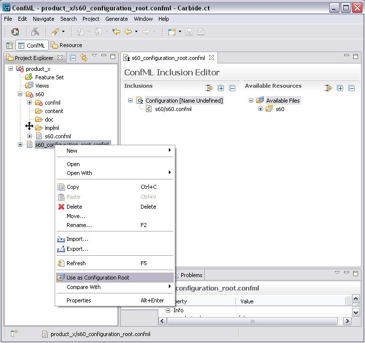

To activate a configuration root right-click and select Configuration > Use as Configuration Root, this causes the tool to create internal model of the active configuration and show all availables features and settings under Feature Set node. All availables confml Views will also be shown under Views node in the project explorer.
